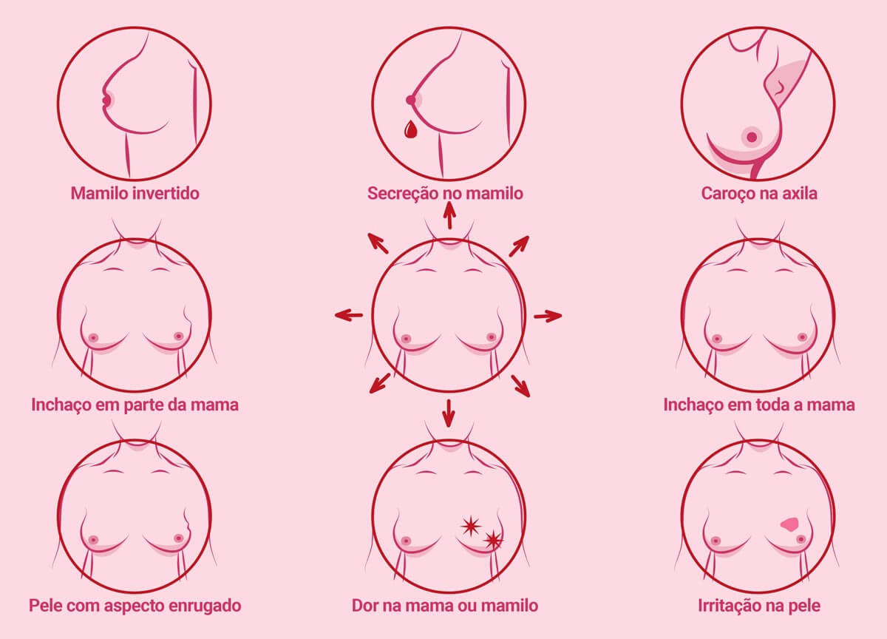
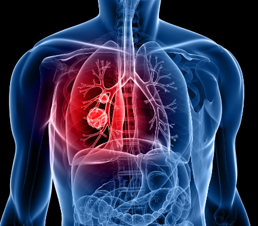
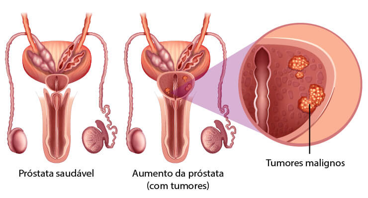
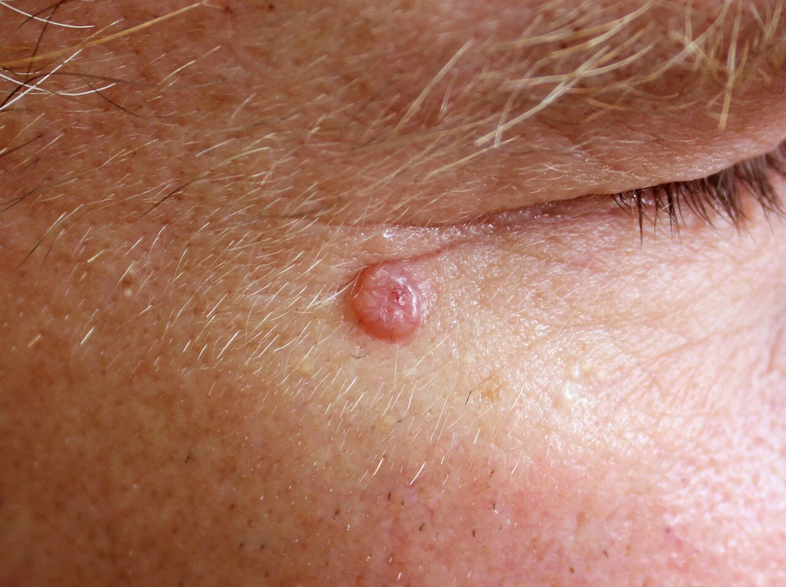
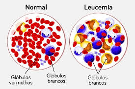

O que é Câncer?
O câncer é uma doença complexa caracterizada pelo crescimento descontrolado de células anormais que podem invadir tecidos e órgãos adjacentes. Essas células podem se espalhar para outras partes do corpo através do sangue e do sistema linfático, um processo chamado metástase. A formação ocorre devido a mutações genéticas que causam o crescimento e divisão celular desregulados.
Tipos de Câncer
Câncer de Mama
Desenvolve-se nos tecidos mamários, mais comum em mulheres.
Principais informações:
- 2º tipo mais comum no mundo
- 80% dos casos em mulheres acima de 50 anos
- Detecção precoce aumenta chances de cura em 95%
Câncer de Pulmão
Afeta os pulmões, frequentemente associado ao tabagismo.
Principais informações:
- Principal causa de morte por câncer
- 85% dos casos relacionados ao tabaco
- Maior incidência em homens entre 55-75 anos
Câncer Colorretal
Surge no intestino grosso ou reto, pode ser prevenido com exames preventivos.
Principais informações:
- 3º tipo mais comum no mundo
- 60% dos casos podem ser evitados com dieta e exercícios
- Maior risco após os 50 anos
Câncer de Próstata
Acomete a glândula prostática, comum em homens idosos.
Principais informações:
- 2º câncer mais comum em homens
- 95% de sobrevivência com diagnóstico precoce
- Risco aumenta após os 45 anos
Câncer de Pele
Alterações nas células da pele, frequentemente causado por exposição solar.
Principais informações:
- Tipo mais comum de câncer
- 90% dos casos são curáveis
- Maior incidência em pessoas de pele clara
Leucemia
Câncer que afeta o sistema de produção de células sanguíneas.
Principais informações:
- Mais comum em crianças e idosos
- Pode ser aguda ou crônica
- Tratamentos modernos aumentam chances de cura
Dados Importantes
19.3 Milhões
Novos casos de câncer estimados em 2020
50%
Cânceres potencialmente evitáveis com mudanças no estilo de vida
66%
Aumento na sobrevivência com diagnóstico precoce
10 Milhões
Mortes por câncer anualmente no mundo
70%
Dos cânceres ocorrem em países de média e baixa renda
40%
Dos cânceres podem ser prevenidos com mudanças no estilo de vida